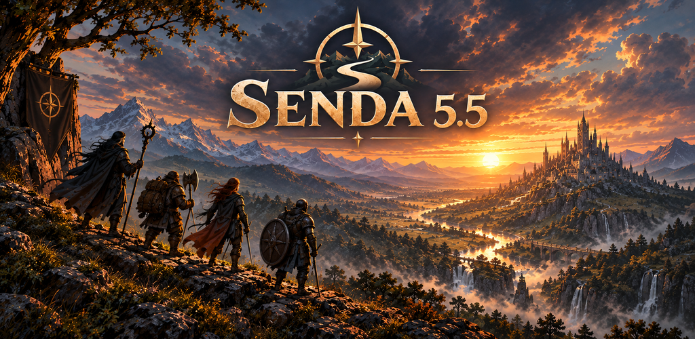

Guía para packs de expansión — SENDA 5.5
Esta guía explica cómo definir el contenido de la app en el formato JSON
que deserializa: clases (y subclases), trasfondos,
especies, dotes, conjuros,
invocaciones, equipo y bestias. Todo el
contenido es data-driven: no hay lógica hardcodeada. Cada objeto vive en un
content pack y el motor lo interpreta a partir de sus mecánicas
(mechanics / grants, llamadas grants).
La guía arranca por la clase (el objeto más grande y completo) y luego cubre el resto de tipos y las unidades de distancia.
Una clase nunca va suelta. Va dentro de un ContentPack, en la lista
classes:
{
"version": "2",
"id": "mi_pack",
"name": "Mi pack de clases",
"author": "Tu nombre",
"license": "…",
"classes": [ /* aquí van una o más clases (ClassDef) */ ],
"species": [],
"backgrounds": [],
"feats": [],
"spells": [],
"invocations": [],
"equipment": [],
"beasts": []
}Solo id es obligatorio en el pack; todas las listas son opcionales (un pack puede
aportar solo clases).
"type": dentro de mechanics, el
campo type decide qué grant es.ignoreUnknownKeys = true: campos extra en el JSON no rompen
el parseo.type de grant que el motor no
conoce se convierte en UNKNOWN en vez de fallar. El display del rasgo
se sigue mostrando.explicitNulls = false: puedes omitir los campos opcionales en
lugar de ponerlos a null.| Campo | Tipo | Obligatorio | Notas |
|---|---|---|---|
id | string | Sí | Identificador único (p. ej. "barbarian"). Se referencia desde otros objetos. |
display | DisplayInfo | Sí | Bloque de presentación. Solo name es obligatorio. |
hitDie | int | Sí | Dado de golpe (6, 8, 10, 12). |
primaryAbility | [string] | No | Características primarias (p. ej. ["STR"]). |
recommendedAbilityOrder | [string] | No | Orden de prioridad para el array estándar. Vacío = STR..CHA. |
savingThrows | [string] | No | Salvaciones con competencia (p. ej. ["STR","CON"]). |
proficiencies | ClassProficiencies | No | Competencias de armadura/armas/habilidades. |
startingEquipment | [EquipmentItem] | No | Equipo inicial (solo display). |
goldAlternative | int? | No | Oro alternativo al equipo inicial. |
subclassUnlockLevel | int? | No | Nivel al que se elige subclase (p. ej. 3). |
progression | [LevelRow] | No | Tabla nivel a nivel (1–20). |
features | [FeatureDef] | No | Rasgos de la clase. |
subclasses | [SubclassDef] | No | Subclases disponibles. |
Presente en clases, rasgos, subclases y opciones. name es lo único
obligatorio.
{
"name": "Bárbaro",
"description": "Texto largo opcional.",
"icon": "🔥",
"flavorText": "Cita ambiental opcional."
}{
"armor": ["light", "medium", "shields"],
"weapon": ["simple", "martial"],
"skills": ["Atletismo", "Percepción"],
"tools": [],
"numSkillChoices": 2
}numSkillChoices = cuántas habilidades elige el jugador de la lista
skills.
Cada ítem es solo un display (aún no tiene mecánica):
"startingEquipment": [
{ "display": { "name": "Hacha a dos manos" } },
{ "display": { "name": "Paquete de explorador" } },
{ "display": { "name": "15 po" } }
]Es una lista de filas (LevelRow), una por nivel:
{ "level": 1, "proficiencyBonus": 2, "features": ["rage","unarmored_defense"], "table": { "rage_uses": 2, "rage_damage": 2 } }| Campo | Tipo | Notas |
|---|---|---|
level | int | Nivel de clase (1–20). |
proficiencyBonus | int? | Bono de competencia en ese nivel. |
features | [string] | IDs de rasgos que se desbloquean en ese nivel. Deben coincidir con features[].id. |
table | map<string,int> | Mapa libre clave→entero. |
table es la clave de las mecánicas que escalan. Un
RESOURCE (u otros grants) con scaling.rule = "FROM_TABLE" y
tableKey = "rage_uses" lee el valor de table["rage_uses"] en el nivel
actual. Así defines "cuántas furias por nivel" sin escribir código.
Losfeaturesde la fila de progresión enlazan por id con elfeaturesde la clase. El texto del rasgo vive una sola vez enfeatures; la tabla solo lo referencia.
Un rasgo es una unidad de contenido con presentación (display) y cero o más
mecánicas (mechanics).
{
"id": "rage",
"level": 1,
"display": { "name": "Furia", "description": "…", "icon": "🔥" },
"mechanics": [ /* grants */ ]
}id (obligatorio): único dentro de la clase; es lo que referencia
progression.level (opcional): nivel al que aparece.display (obligatorio).mechanics (opcional): lista de grants. Puede ir vacía → el
rasgo es solo texto.Un rasgo puramente narrativo:
{
"id": "danger_sense",
"level": 2,
"display": { "name": "Sentir el peligro", "description": "Ventaja en TS de Destreza…", "icon": "👁️" },
"mechanics": []
}Cada grant se identifica con "type". Todos aceptan además dos
campos opcionales:
minLevel (int?): nivel mínimo de clase para que aplique.subclassId (string?): el grant solo aplica si el personaje tiene esa
subclase.RESOURCE — recurso rastreable con botones +/−.
{
"type": "RESOURCE",
"id": "rage_uses",
"label": "Furias",
"icon": "🔥",
"recovery": "SHORT_REST",
"scaling": { "rule": "FROM_TABLE", "tableKey": "rage_uses" },
"hidden": false
}recovery: NONE | SHORT_REST | LONG_REST | DAWN…scaling.rule: FIXED (usa value) | LEVEL | PROFICIENCY | ABILITY_MOD (usa ability) | FROM_TABLE (usa tableKey). multiplier opcional multiplica el resultado.hidden: si es true, el pool existe pero no se dibuja como tracker propio (lo consume una acción).COMBAT_TOGGLE — estado on/off; puede anidar más grants en
onActivate.
{
"type": "COMBAT_TOGGLE",
"id": "rage_active",
"label": "Activar Furia",
"costResource": "rage_uses",
"costAmount": 1,
"onActivate": [
{ "type": "DAMAGE_RESISTANCE", "damageTypes": ["bludgeoning","piercing","slashing"], "condition": "WHILE_RAGING" }
]
}COMBAT_ACTION — acción puntual que gasta un recurso; puede tirar
dados.
{
"type": "COMBAT_ACTION",
"id": "brutal_strike_action",
"label": "Golpe brutal",
"costResource": "rage_uses",
"costAmount": 1,
"rollDice": "1d10",
"rollKind": "DAMAGE",
"description": "…"
}CHOICE — abre un selector para el jugador.
{
"type": "CHOICE",
"id": "asi_4",
"title": "Mejora de característica",
"pick": 1,
"kind": "FEAT",
"level": 4
}kind común: SKILL, FEAT, SUBCLASS,
SPELL, WEAPON_MASTERY, CUSTOM. Campos extra según
kind: pool, count, category,
featId, spellLevel, fromClass, fromClasses,
points, options.
Para kind: "CUSTOM" defines tú las opciones, y cada una puede otorgar grants al
elegirse:
{
"type": "CHOICE",
"id": "divine_fury_type",
"title": "Tipo de daño",
"pick": 1,
"kind": "CUSTOM",
"options": [
{ "id": "opt_necrotic", "display": { "name": "Necrótico" }, "grants": [] },
{ "id": "opt_radiant", "display": { "name": "Radiante" }, "grants": [] }
]
}type | Para qué | Campos clave |
|---|---|---|
AC_FORMULA | Fórmula de CA (defensa sin armadura). Compite como candidato al máximo. | base, abilities, maxDex?, condition (default NO_ARMOR), shieldAllowed |
AC_BONUS | Bono plano que suma a la mejor CA. | amount, condition? (WHILE_EQUIPPED, WHILE_ATTUNED) |
SPEED_BONUS / SPEED_PENALTY | Modifica velocidad. | bonus/amount, condition? |
DAMAGE_RESISTANCE | Resistencia a tipos de daño. | damageTypes, condition? |
DAMAGE_REDUCTION | Reducción plana de daño. | source (PROFICIENCY/FIXED/DICE), flat, dice? |
DAMAGE_BONUS | Bono al daño. | source (FIXED/PROFICIENCY/ABILITY_MOD/FROM_TABLE), attackTypes |
ATTACK_BONUS | Bono a la tirada de ataque (to-hit). | igual que DAMAGE_BONUS |
EXTRA_ATTACK | Nº total de ataques. | totalAttacks |
WEAPON_MASTERY | Marcador de maestría (suele modelarse como CHOICE). | count? |
MAX_HP_BONUS | Bono a PG máximos. | source (PER_LEVEL/FIXED), perLevel, flat |
INITIATIVE_BONUS | Bono a iniciativa. | source (PROFICIENCY/FIXED), flat |
type | Para qué | Campos clave |
|---|---|---|
ABILITY_BOOST | Sube características. | boosts: [{ ability, amount, max? }] |
PROFICIENCY | Otorga competencia. | kind, items |
ABILITY_CHECK_BONUS | Bono a pruebas. | ability?, amount, skill?, condition? |
SPELLCASTING | Declara lanzador de conjuros. | casterType, ability, preparedFormula?, spellListClassId? |
INNATE_SPELL | Conjuro innato / siempre preparado. | spellId, usesPerRest?, restType?, alwaysPrepared?, ability? |
SENSES | Visión en la oscuridad, etc. | darkvisionFeet?, blindsightFeet?, tremorsenseFeet?, truesightFeet? |
INVOCATIONS | Tabla nivel→count de invocaciones. | progression: [{ level, count }] |
ROLL_TABLE | Tabla aleatoria (tira dado y consulta). | dice, entries: [{ min, max, result }] |
Se conservan tipados y se muestran como texto; la mayoría no produce cálculo automático:
ADVANTAGE, AUTO_SUCCESS, LIGHT_SOURCE, FUEL,
MAGNIFICATION, LOCK, LIFT_CAPACITY_MULTIPLIER,
MATERIAL_COMPONENT_SUBSTITUTE, EXPAND_BUNDLE,
UTILITY_ACTION.
UNKNOWN no se escribe a mano: es el resultado de un type que el motor
no reconoce.
Una subclase reutiliza el mismo FeatureDef que la clase. Sus rasgos suelen llevar
el level correspondiente, y si un grant debe aplicar solo a esa subclase, se marca
con subclassId.
{
"id": "berserker",
"display": { "name": "Senda del Berserker", "flavorText": "…", "description": "…" },
"features": [
{
"id": "berserker_intimidating_presence",
"level": 14,
"display": { "name": "Presencia intimidante", "description": "…", "icon": "😈" },
"mechanics": [
{
"type": "RESOURCE",
"id": "intimidating_presence_use",
"label": "Presencia intimidante",
"recovery": "LONG_REST",
"scaling": { "rule": "FIXED", "value": 1 },
"minLevel": 14,
"subclassId": "berserker"
}
]
}
]
}En la clase, la elección de subclase se modela con un CHOICE de
kind: "SUBCLASS" en el rasgo del nivel indicado por
subclassUnlockLevel.
display, hitDie, competencias y
equipo.progression nivel a nivel: en cada fila listas los
ids de los rasgos que se desbloquean y los valores de table que
escalan.features, cada uno con su display y sus
mechanics.table vía
scaling.rule = "FROM_TABLE".subclasses, cada una con sus propios rasgos y grants marcados con
subclassId.Regla de oro: el texto vive una vez (en features /
subclasses[].features); la tabla de progresión solo referencia por id.
Una clase de 1 nivel con un recurso que escala por tabla y un toggle que suma CA:
{
"id": "guardian",
"display": { "name": "Guardián", "description": "Combatiente resistente.", "icon": "🛡️" },
"hitDie": 10,
"primaryAbility": ["STR"],
"recommendedAbilityOrder": ["STR", "CON", "DEX", "WIS", "CHA", "INT"],
"savingThrows": ["STR", "CON"],
"proficiencies": {
"armor": ["light", "medium", "heavy", "shields"],
"weapon": ["simple", "martial"],
"skills": ["Atletismo", "Percepción", "Intimidación"],
"numSkillChoices": 2
},
"startingEquipment": [
{ "display": { "name": "Cota de mallas" } },
{ "display": { "name": "Escudo" } },
{ "display": { "name": "Espada larga" } }
],
"goldAlternative": 100,
"subclassUnlockLevel": 3,
"progression": [
{ "level": 1, "proficiencyBonus": 2, "features": ["guardian_stance"], "table": { "stance_uses": 2 } }
],
"features": [
{
"id": "guardian_stance",
"level": 1,
"display": { "name": "Postura defensiva", "description": "Como acción adicional ganas +1 a la CA.", "icon": "🛡️" },
"mechanics": [
{
"type": "RESOURCE",
"id": "stance_uses",
"label": "Posturas",
"icon": "🛡️",
"recovery": "SHORT_REST",
"scaling": { "rule": "FROM_TABLE", "tableKey": "stance_uses" }
},
{
"type": "COMBAT_TOGGLE",
"id": "stance_active",
"label": "Activar postura",
"costResource": "stance_uses",
"costAmount": 1,
"onActivate": [
{ "type": "AC_BONUS", "amount": 1, "condition": "WHILE_EQUIPPED" }
]
}
]
}
],
"subclasses": []
}id, display.name y hitDie presentes.progression[].features existe en features[].id.costResource apunta a un RESOURCE.id que existe.scaling.tableKey (FROM_TABLE) tiene su clave en
table de cada nivel relevante.subclassId.type de grant coinciden con el catálogo (§5); un typo se degrada a
UNKNOWN.ContentPackSerializer.parseOrNull,
que devuelve Result en vez de lanzar.Todos los objetos de un pack comparten dos bloques ya vistos en la clase:
display (DisplayInfo): name
obligatorio; description, icon, flavorText
opcionales.mechanics / grants (lista de grants):
las mismas mecánicas del catálogo de §5. Un grant con type desconocido degrada a
UNKNOWN sin romper el parseo.Cada tipo vive en su lista dentro del ContentPack: species,
backgrounds, feats, spells, invocations,
equipment, beasts.
Un trasfondo es simple: presentación + mecánicas + equipo inicial.
| Campo | Tipo | Obligatorio | Notas |
|---|---|---|---|
id | string | Sí | Identificador único. |
display | DisplayInfo | Sí | |
mechanics | [Grant] | No | Competencias, dotes de origen, conjuros, etc. |
startingEquipment | [EquipmentItem] | No | Cada ítem es { "display": { "name": "…" } }. |
goldAlternative | int? | No | Oro alternativo al equipo. |
{
"id": "sage",
"display": { "name": "Sabio", "description": "Pasaste años estudiando…", "icon": "📚" },
"mechanics": [
{ "type": "PROFICIENCY", "kind": "SKILL", "items": ["Arcanos", "Historia"] },
{ "type": "PROFICIENCY", "kind": "TOOL", "items": ["Utensilios de calígrafo"] },
{
"type": "CHOICE",
"id": "sage_asi",
"title": "Mejora de característica del trasfondo",
"pick": 1,
"kind": "CUSTOM",
"options": [
{ "id": "sage_int2", "display": { "name": "+2 INT" }, "grants": [ { "type": "ABILITY_BOOST", "boosts": [ { "ability": "INT", "amount": 2, "max": 20 } ] } ] }
]
},
{
"type": "CHOICE",
"id": "sage_origin_feat",
"title": "Dote de origen",
"pick": 1,
"kind": "FEAT",
"category": "ORIGIN"
}
],
"startingEquipment": [
{ "display": { "name": "Libro de saberes" } },
{ "display": { "name": "8 po" } }
],
"goldAlternative": 50
}| Campo | Tipo | Obligatorio | Notas |
|---|---|---|---|
id | string | Sí | |
display | DisplayInfo | Sí | |
speed | int? | No | Velocidad base en pies (convención SRD). La UI convierte a metros. |
size | string? | No | En el SRD base se usa "MEDIUM" / "SMALL". |
darkvision | int? | No | Radio de visión en la oscuridad en pies (0 = no tiene). |
traits | [FeatureDef] | No | Rasgos raciales (mismo FeatureDef que las clases). |
mechanics | [Grant] | No | Grants que aplican a nivel de especie. |
Hay dos sitios para poner mecánicas: dentro de un trait
(FeatureDef.mechanics) cuando forman parte de un rasgo con nombre propio, o
directamente en mechanics de la especie para efectos globales. Preferir
traits cuando el rasgo tiene su propio nombre y texto.
{
"id": "elf",
"display": { "name": "Elfo", "flavorText": "…", "description": "…" },
"speed": 30,
"size": "MEDIUM",
"darkvision": 60,
"traits": [
{
"id": "elf_keen_senses",
"display": { "name": "Sentidos agudos", "description": "Competencia en Percepción.", "icon": "👁️" },
"mechanics": [ { "type": "PROFICIENCY", "kind": "SKILL", "items": ["Percepción"] } ]
},
{
"id": "elf_fey_ancestry",
"display": { "name": "Linaje feérico", "description": "Ventaja contra el estado hechizado." },
"mechanics": [ { "type": "ADVANTAGE", "appliesTo": "SAVING_THROW", "condition": "VS_CHARMED" } ]
},
{
"id": "elf_darkvision_trait",
"display": { "name": "Visión en la oscuridad" },
"mechanics": [ { "type": "SENSES", "darkvisionFeet": 60 } ]
}
],
"mechanics": []
}El campodarkvisionde la especie y un grantSENSES(darkvisionFeet) cumplen roles parecidos y ambos van en pies. El motor toma el máximo entre eldarkvisionde la especie y todos losSENSESactivos. Ver §18 para unidades.
Las dotes se referencian desde los CHOICE de kind: "FEAT" (en clases
y trasfondos).
| Campo | Tipo | Obligatorio | Notas |
|---|---|---|---|
id | string | Sí | |
category | string? | No | ORIGIN, GENERAL, FIGHTING_STYLE, EPIC. Filtra qué CHOICE la ofrece. |
display | DisplayInfo | Sí | |
prerequisite | Prerequisite? | No | Requisitos para poder elegirla. |
repeatable | bool | No | true = se puede tomar varias veces. Default false. |
mechanics | [Grant] | No | Efectos de la dote. |
Prerequisite (todos los campos opcionales):
{
"minLevel": 4,
"ability": "STR",
"abilityOptions": ["STR", "DEX"],
"minScore": 13,
"requiresSpellcasting": true
}Usa ability + minScore para una característica única, o
abilityOptions + minScore cuando basta con cumplir una de varias.
{
"id": "tough",
"category": "ORIGIN",
"display": { "name": "Duro", "description": "Tus PG máximos aumentan en 2 por nivel.", "icon": "❤️" },
"repeatable": false,
"mechanics": [
{ "type": "MAX_HP_BONUS", "source": "PER_LEVEL", "perLevel": 2 }
]
}Los conjuros no usan grants: son datos estáticos. Se enlazan con clases por
classes / spellListClassId.
| Campo | Tipo | Obligatorio | Notas |
|---|---|---|---|
id | string | Sí | |
display | DisplayInfo | Sí | |
level | int | Sí | 0 = truco (cantrip). |
school | string? | No | Escuela (texto libre). |
castingTime | string? | No | P. ej. "1 acción". |
range | string? | No | |
components | string? | No | P. ej. "V, S, M". |
duration | string? | No | |
concentration | bool | No | Default false. |
ritual | bool | No | Default false. |
higherLevel | string? | No | Efecto a niveles superiores. |
classes | [string] | No | IDs de clases con acceso. Cruza con SPELLCASTING.spellListClassId. |
{
"id": "fire_bolt",
"display": { "name": "Rayo de fuego", "description": "Lanzas una mota de fuego…" },
"level": 0,
"school": "Evocación",
"castingTime": "1 acción",
"range": "36 m",
"components": "V, S",
"duration": "Instantánea",
"higherLevel": "El daño aumenta a niveles 5, 11 y 17.",
"classes": ["sorcerer", "wizard"]
}Invocaciones del Brujo (u otras clases que declaren invocaciones con el grant
INVOCATIONS). Cada invocación es presentación + prerequisitos + mecánicas.
| Campo | Tipo | Obligatorio | Notas |
|---|---|---|---|
id | string | Sí | |
display | DisplayInfo | Sí | |
minLevel | int | No | Nivel mínimo de clase. Default 1. |
prerequisiteIds | [string] | No | IDs de otras invocaciones requeridas. |
pactRequired | string? | No | Pacto necesario (p. ej. "PACT_OF_THE_BLADE"). |
mechanics | [Grant] | No | Suele ser INNATE_SPELL, AC_FORMULA o PROFICIENCY. |
{
"id": "agonizing_blast",
"display": { "name": "Explosión agonizante", "description": "Sumas tu mod. de Carisma al daño de Descarga sobrenatural." },
"minLevel": 1,
"prerequisiteIds": [],
"mechanics": [
{ "type": "DAMAGE_BONUS", "source": "ABILITY_MOD", "ability": "CHA", "attackTypes": ["eldritch_blast"] }
]
}El objeto más rico en datos. Tiene display, una category, bloques
tipados opcionales según el tipo, y grants para efectos mecánicos.
| Campo | Tipo | Obligatorio | Notas |
|---|---|---|---|
id | string | Sí | |
display | DisplayInfo | Sí | |
category | string | Sí | WEAPON, ARMOR, SHIELD, TOOL, ADVENTURING_GEAR, CONTAINER, CONSUMABLE… |
subtype | string? | No | P. ej. "martial_melee", "heavy", "light". |
cost | Cost? | No | { "amount": 15, "unit": "gp" }. |
weight | double? | No | En kg. |
rarity | string? | No | common, uncommon, rare, very_rare, legendary, artifact. |
requiresAttunement | bool | No | Default false. |
| bloques tipados | — | No | weapon, armor, shield, tool, container, focus, ammunition. |
grants | [Grant] | No | Efectos mecánicos. Vacío = objeto descriptivo. |
Bloques tipados más usados:
weapon (WeaponData): damageDice,
damageType, versatileDice, properties,
masteryProperty, attackAbilities,
range { normal, long, unit }, fixedDamage.armor (ArmorData): baseAc,
category (LIGHT/MEDIUM/HEAVY),
maxDex o dexterityCap, strengthRequirement,
stealthDisadvantage.shield (ShieldData): acBonus
(default 2).tool, container,
focus, ammunition: ver
EquipmentDef.kt.Arma:
{
"id": "longsword",
"display": { "name": "Espada larga" },
"category": "WEAPON",
"subtype": "martial_melee",
"cost": { "amount": 15, "unit": "gp" },
"weight": 1.5,
"weapon": {
"damageDice": "1d8",
"damageType": "slashing",
"versatileDice": "1d10",
"properties": ["versatile"],
"masteryProperty": "sap",
"attackAbilities": ["STR"]
}
}Objeto mágico con sintonización (los grants condicionados aplican al sintonizar/equipar):
{
"id": "cloak_of_protection",
"display": { "name": "Capa de protección" },
"category": "ADVENTURING_GEAR",
"rarity": "uncommon",
"requiresAttunement": true,
"grants": [
{ "type": "AC_BONUS", "amount": 1, "condition": "WHILE_ATTUNED" }
]
}Para la Forma Salvaje del Druida. No lleva grants: son datos estáticos que sustituyen el perfil del personaje al transformarse.
| Campo | Tipo | Notas |
|---|---|---|
id | string | Obligatorio. |
display | DisplayInfo | Obligatorio. |
cr | string | Texto del desafío ("1/4"). Default "0". |
crValue | double | Valor numérico (0.25). Filtra por nivel de druida. |
size | string | Default "Mediana". |
ac | int | Default 10. |
hp | int | Default 1. |
speed / swimSpeed / flySpeed / climbSpeed | int | Velocidades en metros (0 = no la tiene). |
strength / dexterity / constitution | int | Default 10. |
senses | string | P. ej. "visión en la oscuridad 18 m". |
attacks | string | Ataques en texto, uno por línea. |
notes | string | Rasgos especiales, inmunidades, etc. |
{
"id": "wolf",
"display": { "name": "Lobo" },
"cr": "1/4",
"crValue": 0.25,
"size": "Mediana",
"ac": 13,
"hp": 11,
"speed": 12,
"strength": 12,
"dexterity": 15,
"constitution": 12,
"senses": "percepción pasiva 13",
"attacks": "Mordisco: +4 al golpe, 2d4+2 perforante.",
"notes": "Tácticas de manada: ventaja si un aliado está a 1,5 m del objetivo."
}| Tipo | Lista | ¿Grants? | Bloque de datos propio |
|---|---|---|---|
| Clase | classes | Sí (en features[].mechanics) | progression + proficiencies |
| Subclase | dentro de la clase | Sí (en features[].mechanics, con subclassId) | — |
| Trasfondo | backgrounds | Sí (mechanics) | startingEquipment |
| Especie | species | Sí (traits[].mechanics y/o mechanics) | speed, size, darkvision |
| Dote | feats | Sí (mechanics) | prerequisite, category, repeatable |
| Conjuro | spells | No | datos estáticos + classes |
| Invocación | invocations | Sí (mechanics) | minLevel, prerequisiteIds, pactRequired |
| Equipo | equipment | Sí (grants) | bloques weapon/armor/shield/… |
| Bestia | beasts | No | stats de criatura |
Checklist transversal: valida siempre con ContentPackSerializer.parseOrNull
(devuelve Result), revisa que los ids referenciados existan (dotes desde
CHOICE, costResource hacia un RESOURCE,
classes de conjuro hacia el spellListClassId de la clase) y recuerda
que cualquier type de grant no reconocido degrada a UNKNOWN sin romper
el pack.
No todas las distancias usan la misma unidad. Hay dos convenciones según de dónde venga el dato:
Contenido de personaje → PIES (convención SRD). Se guarda en pies y la UI
convierte a metros al mostrar (5 pies = 1,5 m, es decir metros = pies × 3 / 10):
SpeciesDef.speed y SpeciesDef.darkvision → pies. En
srd_base.json: elfo speed: 30 (9 m), enano
darkvision: 120 (36 m).SENSES → darkvisionFeet, blindsightFeet,
tremorsenseFeet, truesightFeet.Equipo y objetos → METROS por defecto, con campo unit
explícito. Estos grants y bloques llevan un unit (default "m"),
así que puedes indicar la unidad por objeto:
SpeedBonusGrant.bonus / SpeedPenaltyGrant (unit,
default "m").WeaponRange { normal, long, unit } (default "m").LightSourceGrant, Measure { amount, unit } (longitud de cuerdas,
etc.).Regla práctica:
| Dato | Unidad | Ejemplo |
|---|---|---|
SpeciesDef.speed, SpeciesDef.darkvision | pies | "speed": 30 → 9 m |
SENSES (*Feet) | pies | "darkvisionFeet": 60 → 18 m |
SpeedBonusGrant.bonus, SpeedPenaltyGrant.amount | metros (o unit) | "bonus": 3 = +3 m |
WeaponRange, LightSourceGrant, Measure | según unit (default m) | { "normal": 24, "unit": "m" } |
BeastDef.speed/swim/fly/climb | metros | "speed": 12 = 12 m |
Al crear una especie, usa siempre pies (30, 60, 120…) para mantener
la coherencia con el motor y el SRD base. Al crear equipo, usa metros salvo que
pongas unit explícito.